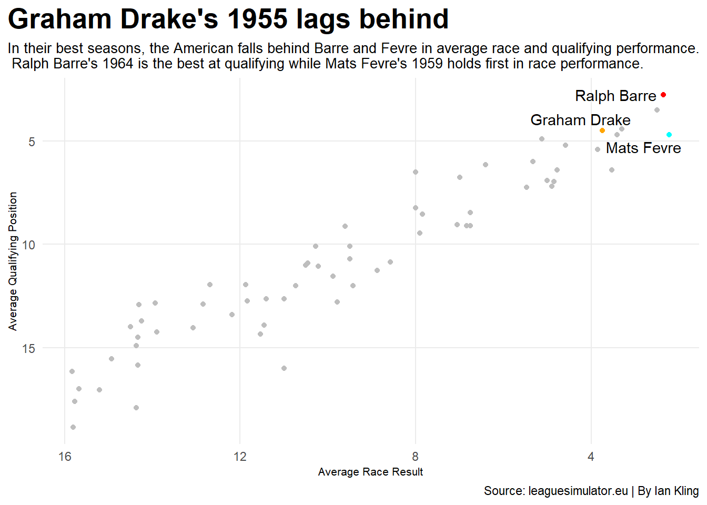
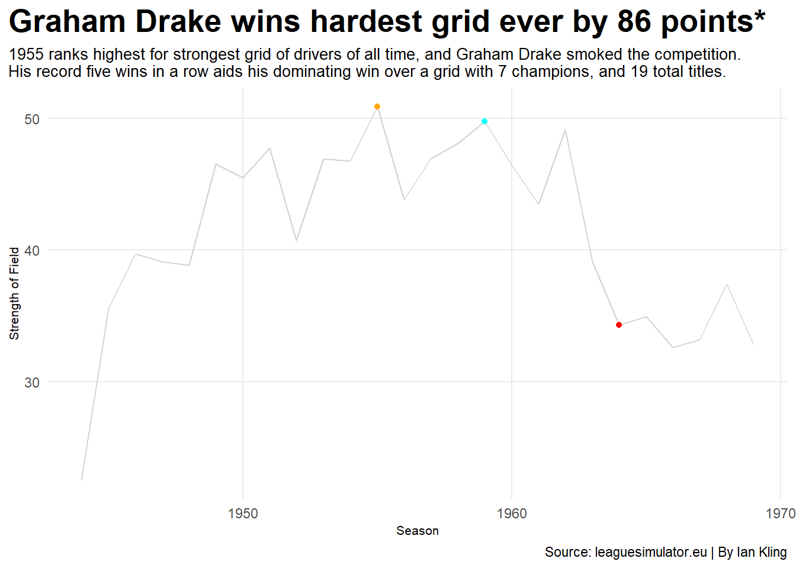

What the Hell Am I Doing? Spreadsheets, Formula One, Obsession, and more Spreadsheets
formula1
spreadsheets
racing
Author
Ian Kling
Published
April 10, 2026
Buckle in.
If you’re not familiar with Formula One, and Formula racing, I suggest doing some basic research. Here’s the minimum basics of what you need;
It’s real. It’s been around since the ‘50s. The current Formula One champion in McLaren’s Lando Norris.
Drivers race cars around race tracks. They do ‘qualifying’ on Saturdays, which is a speed test, with how fast you go determines where you start on Sundays. That is when race day occurs, and then they, you know, race.
Drivers get points for doing good in races; 25 for a race win, 18 for second, 15 for third- it continues in a nonsensical way- until 10th place, which earns the driver 1 whole point.
Each team gets two drivers. Their points combine for the team score. The teams are competing for a team title. The drivers keep their individual points, and compete for an individual title.
Now. Please note that beyond this point, none of this is real. Numbers on a sheet. Let me introduce you to the stallion we shall ride into the spreadsheet sunset. A website;
As you can see, over the past four years of my life, I have conducted 26 seasons of Formula One. Fake drivers on a website, and I put every single statistic onto a series of spreadsheets. 500 races, not just pressing buttons, but transcribing everything.
If you have ever had the pleasure of sitting behind me in class, you’ve probably seen these spreadsheets before. “Probably” meaning certainly. It’s been four years of grinding on these spreadsheets for literally zero reason. No reward, academic or monetary, was ever going to come out of this. It’s just a thing that I do because I do it. Until, Matt Waite’s 350.
Over 26 seasons, I have had 11 World Champions, and five multi-time champions.
Driver
Titles
Mats Fevre
6
Graham Drake
5
Ralph Barre
4
Louri Kauffman
3
Tim Sastre
2
Yuri Mariani
1
Foma DeGarmo
1
Charles Perrrault
1
Miles Bianchi
1
Nicolas Welch
1
Wilmer Jost
1
My quest: Which single season performance and title from these drivers was the most impressive? You know, considering all of these ‘drivers’ are numbers in code. Let’s go.
I did some preliminary cuts to whittle down candidates. I noted point totals, win totals, and other statistics like margin of championship victory. I also noted how impressed I was when I was simulating through that season. This brings me to the three strongest seasons.
Graham Drake 1955
Mats Fevre 1959
Ralph Barre 1964
( Yes, the dates are arbitrary. Deal with it.)
Graham Drake finished his 1955 campaign with 339 points on 9 wins and 13 podiums. He finished first by 86 points from runner-up Mats Fevre on 253 points. He scored a record five straight victories down the stretch to pull away- no one else has more than three straight victories.
Mats Fevre finished his 1959 campaign with 358 points on 10 wins and 15 podiums. He finished first by 78 points from runner-up Graham Drake on 280 points. Fevre dominated start to finish, leading the championship for an astonishing 19 of 20 races- another record.
Ralph Barre finished his 1964 campaign with 335 points on 10 wins and 14 podiums. He finished first by 15 points from runner-up Marcel Dumont on 320 points. Ralph overcame a record points deficit after three races to snatch the title from Dumont.
Aforementioned, a race weekend is made up of two parts; Qualifying and the actual race. Both are important for sustained success over a season. If a driver can perform highly at one of those, they are likely to have a good season. Those who can do both at the highest rate- championship level good.
Code
library(tidyverse)library(patchwork)library(ggrepel)DrakeQuali <-read_csv("Project 1 Data - Graham Drake 1955 Qualifying.csv")DrakeRace <-read_csv("Project 1 Data - Graham Drake 1955 Race Result (1).csv")FevreQuali <-read_csv("Project 1 Data - Mats Fevre 1959 Qualifying .csv")FevreRace <-read_csv("Project 1 Data - Mats Fevre 1959 Race Result (3).csv")BarreQuali <-read_csv("Project 1 Data - Ralph Barre 1964 Qualifying.csv")BarreRace <-read_csv("Project 1 Data - Ralph Barre 1964 Race Result.csv")GDQualiAVG<- DrakeQuali |>group_by( Driver ) |>mutate(Avg_QP =mean(c(Australia, Baku, Austin, Imola, Monaco, Barcelona, Canada, Austria, Silverstone, Belgium, Netherlands, Monza, Singapore, Nagoya, AbuDhabi, MexicoCity, Interlagos, Germany, Morocco, Hungary), na.rm =TRUE) )GDRaceAVG <- DrakeRace |>group_by( Driver ) |>mutate(Avg_RR =mean(c(Australia, Baku, Austin, Imola, Monaco, Barcelona, Canada, Austria, Silverstone, Belgium, Netherlands, Monza, Singapore, Nagoya, AbuDhabi, MexicoCity, Interlagos, Germany, Morocco, Hungary), na.rm =TRUE) )MFQualiAVG <- FevreQuali |>group_by( Driver ) |>mutate(Avg_QP =mean(c(Australia, Singapore, Malaysia, Interlagos, MexicoCity, Valencia, MagnyCours, Silverstone, Monaco, Oslo, Canada, Austin, SouthAfrica, Belgium, Netherlands, Monza, Baku, Austria, Suzuka, Hungary), na.rm =TRUE) ) MFRaceAVG <- FevreRace |>group_by( Driver ) |>mutate(Avg_RR =mean(c(Australia, Singapore, Malaysia, Interlagos, MexicoCity, Valencia, MagnyCours, Silverstone, Monaco, Oslo, Canada, Austin, SouthAfrica, Belgium, Netherlands, Monza, Baku, Austria, Suzuka, Hungary), na.rm =TRUE) )RBQualiAVG <- BarreQuali |>group_by( Driver ) |>mutate(Avg_QP =mean(c(Australia, Singapore, Suzuka, Malaysia, SouthAfrica, Valencia, MagnyCours, Monaco, Silverstone, Hockenheim, Austria, MexicoCity, Austin, Canada, Baku, Belgium, Netherlands, Monza, Interlagos, Hungary), na.rm =TRUE) )RBRaceAVG <- BarreRace |>group_by( Driver ) |>mutate(Avg_RR =mean(c(Australia, Singapore, Suzuka, Malaysia, SouthAfrica, Valencia, MagnyCours, Monaco, Silverstone, Hockenheim, Austria, MexicoCity, Austin, Canada, Baku, Belgium, Netherlands, Monza, Interlagos, Hungary), na.rm =TRUE) )RBRaceAVGJoin <- RBRaceAVG |>select(Driver, Team, Season, Avg_RR)RBQualiAVGJoin <- RBQualiAVG |>select(Driver, Team, Season, Avg_QP)RBcombined <- RBRaceAVGJoin |>inner_join(RBQualiAVGJoin)MFRaceAVGJoin <- MFRaceAVG |>select(Driver, Team, Season, Avg_RR)MFQualiAVGJoin <- MFQualiAVG |>select(Driver, Team, Season, Avg_QP)MFcombined <- MFRaceAVGJoin |>inner_join(MFQualiAVGJoin)GDRaceAVGJoin <- GDRaceAVG |>select(Driver, Team, Season, Avg_RR)GDQualiAVGJoin <- GDQualiAVG |>select(Driver, Team, Season, Avg_QP)GDcombined <- GDRaceAVGJoin |>inner_join(GDQualiAVGJoin)GDBest <- GDcombined |>filter(Driver =="Graham Drake")MFBest <- MFcombined |>filter(Driver =="Mats Fevre")RBBest <- RBcombined |>filter(Driver =="Ralph Barre")stacked <-bind_rows(RBcombined, MFcombined, GDcombined)best <-bind_rows(GDBest, MFBest, RBBest)ggplot()+geom_point(data=stacked, aes(x=Avg_RR,y=Avg_QP), color="grey") +geom_point(data=GDBest, aes(x=Avg_RR,y=Avg_QP), color="orange") +geom_point(data=MFBest, aes(x=Avg_RR,y=Avg_QP), color="cyan") +geom_point(data=RBBest, aes(x=Avg_RR,y=Avg_QP), color="red") +scale_x_reverse()+scale_y_reverse() +geom_text_repel(data = best, aes(x=Avg_RR,y=Avg_QP, label=Driver)) +labs(x="Average Race Result", y="Average Qualifying Position", title="Graham Drake's 1955 lags behind", subtitle="In their best seasons, the American falls behind Barre and Fevre in average race and qualifying performance. \n Ralph Barre's 1964 is the best at qualifying while Mats Fevre's 1959 holds first in race performance.", caption="Source: leaguesimulator.eu | By Ian Kling") +theme_minimal()+theme(plot.title =element_text(size =20, face ="bold"),axis.title =element_text(size =8), plot.subtitle =element_text(size=10), panel.grid.minor =element_blank(),plot.title.position ="plot" )

Combining the three seasons in question, it reveals a few things. In Ralph Barre’s 1964 season, over 20 races, he was a better qualifier than Drake and Fevre in their seasons. Likewise, Mats Fevre’s 1959 season stands out as the best average race result over 20 races. Graham Drake lags behind- compiling a 7th best average race result and 4th best average qualifying position.
This doesn’t rule out Graham’s 1955, but it puts the focus on Ralph Barre and Mats Fevre. Both are leading a category against their counterpart. Though, it might be skewed considering retirements are excluded from the set. Drake finished every race, a feat not achieved by the other two, meaning his off races out of the points, while still earning zero points, count against him in this metric.
DNFs:
Ralph Barre | 3
Mats Fevre | 2
Graham Drake | 0
Since it is a sim, every single season is going to be 20 races long, there is no representation of car development, and the same point system is used throughout. This eliminates many of the issues of modern sport debate being skewed by era, because all seasons are the same. The tracks change, sure, but that doesn’t have the sway it would, say, a 20 race season against a 14 race season.
So after three races, every driver across every season will have raced for a possible 75 points. Deficits early in the season mean slightly less than deficits later in the season considering how many points are still up for grabs. However, the larger the deficit earlier in the season, the more refined and nearly perfect a driver has to be down the stretch.
Code
library(tidyverse)library(gt)GAP <-read_csv("Project 1 Data - GAP.csv")gap3 <- GAP |>select(season, driver, champ_gap_3 ) |>arrange(champ_gap_3)inverse <- GAP |>select(season, driver, champ_gap_3 ) |>arrange(desc(champ_gap_3))gap3 |>gt() |>cols_label(champ_gap_3 ="Gap to First after 3 Races",season ="Season",driver ="Champion" ) |>tab_header(title ="Ralph Barre climbs out of the hole",subtitle ="In 1964, Ralph Barre overturned the largest deficit after the first 3 races." )|>tab_style(style =cell_text(color ="black", weight ="bold", align ="left"),locations =cells_title("title") ) |>tab_style(style =cell_text(color ="black", align ="left"),locations =cells_title("subtitle") )|>tab_source_note(source_note =md("**By:** Ian Kling | **Source:** leaguesimulator.eu") )|>tab_style(locations =cells_column_labels(columns =everything()),style =list(cell_borders(sides ="bottom", weight =px(3)),cell_text(weight ="bold", size=12) ) ) |>opt_row_striping() |>opt_table_lines("none") |>tab_style(style =list(cell_fill(color ="darkred"),cell_text(color ="white") ),locations =cells_body(rows = season =="64"))|>tab_style(style =list(cell_fill(color ="cyan"),cell_text(color ="black") ),locations =cells_body(rows = season =="59") )|>tab_style(style =list(cell_fill(color ="orange"),cell_text(color ="black") ),locations =cells_body(rows = season =="55") )
Ralph Barre climbs out of the hole
In 1964, Ralph Barre overturned the largest deficit after the first 3 races.
Season
Champion
Gap to First after 3 Races
64
Ralph Barre
-60
49
Foma DeGarmo
-52
57
Louri Kauffman
-41
66
Ralph Barre
-40
54
Graham Drake
-33
48
Mats Fevre
-27
46
Mats Fevre
-25
55
Graham Drake
-25
65
Ralph Barre
-24
67
Louri Kauffman
-22
51
Mats Fevre
-18
53
Charles Perrault
-11
61
Miles Bianchi
-11
50
Tim Sastre
-9
52
Mats Fevre
-8
60
Graham Drake
-8
68
WIlmer Jost
-8
45
Yuri Mariani
-4
69
Ralph Barre
-4
47
Mats Fevre
-3
58
Louri Kauffman
-1
44
Tim Sastre
2
62
Graham Drake
2
63
Nicolas Welch
15
56
Graham Drake
17
59
Mats Fevre
24
By: Ian Kling | Source: leaguesimulator.eu
Ralph Barre turned his torrid start, and -60 point deficit after three races into a world title. Considering race wins are worth 25 points, that is just about a two and a half race win hole. He would battle back to Dumont, but still trailed with two races to go. He would rattle off back to back wins in the final two races, taking the title by 15 points.
However, what intrigues me more about this stat- in 21 of 26 seasons, the world champion was not the championship leader after three races, and trailed by a wide range of points. That’s about 81% of titles won from behind after three races. This means leading after three races, and then going onto win the title is the rarer accomplishment, happening only 19% of the time. Further, only three drivers held a double digit lead after three races.
After the first three races of 1959, Mats Fevre led the championship by 24 points. Nearly a whole race win. Graham Drake would take a one point championship lead the next week after Fevre retired, and Drake won. From there, the Norwegian was untouchable, leading the rest of the way home. Advantage Fevre.
Now, with any sports debate, how good a person or team’s competition was must be addressed. Introducing Strength of Field, or SOF. It is a metric that combines each season’s drivers career accolades, to determine which grid had the strongest combination of drivers all time. It goes,
It weighs wins over podiums, naturally. Championships weigh much more, because, well, the more world champions on a grid you have, obviously that is stronger than a grid with no champions. Years active should be self-explanatory, and it was square rooted to reduce the extra weight of mediocre drivers with long careers at the back of the grid.
Code
library(tidyverse)library(janitor)library(ggbeeswarm)library(ggrepel)set.seed(1234)raw <-read_csv("Project 1 Data - Drivers by season (1).csv")yr44 <- raw |>select(`1944`) |>mutate(Season =1944) |>rename(Driver =1) |>mutate(Rank =row_number()) |>filter(is.na(Driver) ==FALSE)yr45 <- raw |>select(`1945`) |>mutate(Season =1945) |>rename(Driver =1) |>mutate(Rank =row_number()) |>filter(is.na(Driver) ==FALSE)yr46 <- raw |>select(`1946`) |>mutate(Season =1946) |>rename(Driver =1) |>mutate(Rank =row_number()) |>filter(is.na(Driver) ==FALSE)yr47 <- raw |>select(`1947`) |>mutate(Season =1947) |>rename(Driver =1) |>mutate(Rank =row_number()) |>filter(is.na(Driver) ==FALSE)yr48 <- raw |>select(`1948`) |>mutate(Season =1948) |>rename(Driver =1) |>mutate(Rank =row_number()) |>filter(is.na(Driver) ==FALSE)yr49 <- raw |>select(`1949`) |>mutate(Season =1949) |>rename(Driver =1) |>mutate(Rank =row_number()) |>filter(is.na(Driver) ==FALSE)yr50 <- raw |>select(`1950`) |>mutate(Season =1950) |>rename(Driver =1) |>mutate(Rank =row_number()) |>filter(is.na(Driver) ==FALSE)yr51 <- raw |>select(`1951`) |>mutate(Season =1951) |>rename(Driver =1) |>mutate(Rank =row_number()) |>filter(is.na(Driver) ==FALSE)yr52 <- raw |>select(`1952`) |>mutate(Season =1952) |>rename(Driver =1) |>mutate(Rank =row_number()) |>filter(is.na(Driver) ==FALSE)yr53 <- raw |>select(`1953`) |>mutate(Season =1953) |>rename(Driver =1) |>mutate(Rank =row_number()) |>filter(is.na(Driver) ==FALSE)yr54 <- raw |>select(`1954`) |>mutate(Season =1954) |>rename(Driver =1) |>mutate(Rank =row_number()) |>filter(is.na(Driver) ==FALSE)yr55 <- raw |>select(`1955`) |>mutate(Season =1955) |>rename(Driver =1) |>mutate(Rank =row_number()) |>filter(is.na(Driver) ==FALSE)yr56 <- raw |>select(`1956`) |>mutate(Season =1956) |>rename(Driver =1) |>mutate(Rank =row_number()) |>filter(is.na(Driver) ==FALSE)yr57 <- raw |>select(`1957`) |>mutate(Season =1957) |>rename(Driver =1) |>mutate(Rank =row_number()) |>filter(is.na(Driver) ==FALSE)yr58 <- raw |>select(`1958`) |>mutate(Season =1958) |>rename(Driver =1) |>mutate(Rank =row_number()) |>filter(is.na(Driver) ==FALSE)yr59 <- raw |>select(`1959`) |>mutate(Season =1959) |>rename(Driver =1) |>mutate(Rank =row_number()) |>filter(is.na(Driver) ==FALSE)yr60 <- raw |>select(`1960`) |>mutate(Season =1960) |>rename(Driver =1) |>mutate(Rank =row_number()) |>filter(is.na(Driver) ==FALSE)yr61 <- raw |>select(`1961`) |>mutate(Season =1961) |>rename(Driver =1) |>mutate(Rank =row_number()) |>filter(is.na(Driver) ==FALSE)yr62 <- raw |>select(`1962`) |>mutate(Season =1962) |>rename(Driver =1) |>mutate(Rank =row_number()) |>filter(is.na(Driver) ==FALSE)yr63 <- raw |>select(`1963`) |>mutate(Season =1963) |>rename(Driver =1) |>mutate(Rank =row_number()) |>filter(is.na(Driver) ==FALSE)yr64 <- raw |>select(`1964`) |>mutate(Season =1964) |>rename(Driver =1) |>mutate(Rank =row_number()) |>filter(is.na(Driver) ==FALSE)yr65 <- raw |>select(`1965`) |>mutate(Season =1965) |>rename(Driver =1) |>mutate(Rank =row_number()) |>filter(is.na(Driver) ==FALSE)yr66 <- raw |>select(`1966`) |>mutate(Season =1966) |>rename(Driver =1) |>mutate(Rank =row_number()) |>filter(is.na(Driver) ==FALSE)yr67 <- raw |>select(`1967`) |>mutate(Season =1967) |>rename(Driver =1) |>mutate(Rank =row_number()) |>filter(is.na(Driver) ==FALSE)yr68 <- raw |>select(`1968`) |>mutate(Season =1968) |>rename(Driver =1) |>mutate(Rank =row_number()) |>filter(is.na(Driver) ==FALSE)yr69 <- raw |>select(`1969`) |>mutate(Season =1969) |>rename(Driver =1) |>mutate(Rank =row_number()) |>filter(is.na(Driver) ==FALSE)seasons <-bind_rows(yr44, yr45, yr46, yr47, yr48, yr49, yr50, yr51, yr52, yr53, yr54, yr55, yr56, yr57, yr58, yr59, yr60, yr61, yr62, yr63, yr64, yr65, yr66, yr67, yr68, yr69)total_seasons <- seasons |>group_by(Driver) |>summarize(YearsActive =n() )career_wins <- raw |>select(Rank...27, Name...28, Country...29, Wins) |>rename(Rank =1, Driver =2, Country =3, CareerWins = Wins) |>mutate(Driver =gsub("*", "", Driver, fixed=TRUE)) |>select(-Rank, -Country)career_podiums <- raw |>select(Name...33, Podiums) |>rename(Driver =1) |>mutate(Driver =gsub("*", "", Driver, fixed=TRUE)) career_titles <- raw |>select(Name...38, `World Titles`) |>rename(Driver =1, WorldTitles =2) |>mutate(Driver =gsub("*", "", Driver, fixed=TRUE)) total_rankings <- total_seasons |>left_join(career_wins) |>left_join(career_podiums) |>left_join(career_titles) |>mutate(across(3:last_col(), ~replace_na(.x, 0)))ADSS <- total_rankings |>mutate(DSS = (5*CareerWins) + (2*Podiums) + (20*WorldTitles) + (YearsActive),ADSS = DSS /sqrt(YearsActive) ) ADSSinclude <- seasons |>left_join(ADSS) SOF <- ADSSinclude |>group_by(Season) |>summarize(SOF =mean(ADSS) ) gd <- SOF |>filter(Season ==1955)mf <- SOF |>filter(Season ==1959)rb <- SOF |>filter(Season ==1964)ggplot() +geom_line(data=SOF, aes(x=Season, y=SOF), color="lightgrey")+geom_point(data=gd, aes(x=Season,y=SOF), color="orange") +geom_point(data=mf, aes(x=Season,y=SOF), color="cyan") +geom_point(data=rb, aes(x=Season,y=SOF), color="red") +labs(x="Season", y="Strength of Field", title="Graham Drake wins hardest grid ever by 86 points*", subtitle="1955 ranks highest for strongest grid of drivers of all time, and Graham Drake smoked the competition. \nHis record five wins in a row aids his dominating win over a grid with 7 champions, and 19 total titles. ", caption="Source: leaguesimulator.eu | By Ian Kling") +theme_minimal()+theme(plot.title =element_text(size =20, face ="bold"),axis.title =element_text(size =8), plot.subtitle =element_text(size=10), panel.grid.minor =element_blank(),plot.title.position ="plot" )

The return of Graham Drake to the conversation. Graham Drake defeated the strongest grid of the entire sim, by 86 points (over three race wins). A grid that features seven of the 11 world champions, and a combined 19 championships. It is impossible to look past that.
In second in terms of SOF, 1959 and Mats Fevre’s 78 points victory are right there. The margin between first and second was over a point, 50.9 to 49.7. Fevre’s grid held six different champions, and a total of 18 titles.
One final note on SOF. The sim had to start somewhere. It would be unrealistic to have the first season be composed of only 19 year olds. Some careers had to happen before the sim started. Likewise, the most current seasons, drivers’ careers are not over. Ralph Barre is still racing, as are other high level counterparts like Marcel Dumont and Alexis Dannal, who could both still win titles. If I sim another ten years, Barre’s 1964 has every chance to go up, but as it stands, 1955 remains the standard.
With all that being said, there is a case for all three of these drivers to have had the ‘most impressive season’. Drake won by over three race wins against the strongest grid. Fevre dominated the average race result, leading the championship for 19/20 races, and Barre was the best average qualifier while overcoming the largest deficit after three races.
Like the spreadsheets, I started to obsess over this. I wanted to finally use these spreadsheets for something meaningful. I thought about this project for weeks. I needed it to mean something, and I needed to know who had the most impressive season.
Do you know the best part of this specific debate? When I shut my laptop, it doesn’t exist. Numbers on a sheet. It doesn’t matter who was what, because they are numbers, on a sheet. What a waste of time.